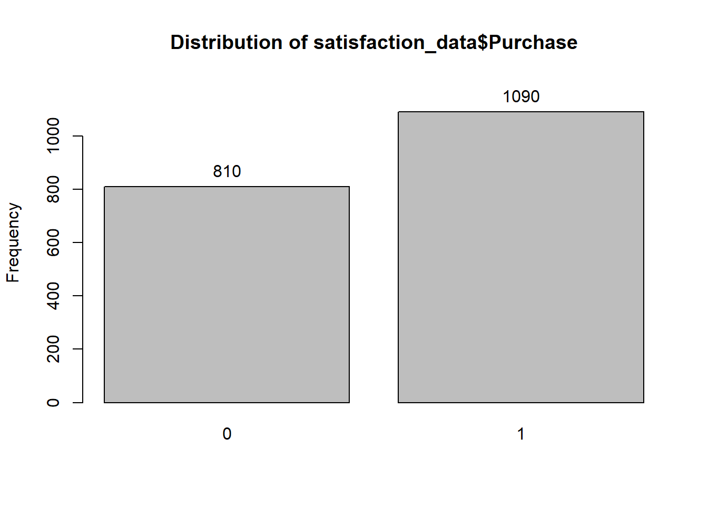

1 Week 1
1.1 Mini-Example
1.1.1 Task Description
The goal of the mini-example is to examine the association between firm’s discretionary spending (advertising, R&D) and top-line financial impact (sales)
- How many variables are in the dataset? Which ones are identifier, categorical vs. continuous?
- What is(are) the focal outcome variable(s)?
- What is(are) the focal predictor variable(s)?
- What is(are) the focal “control” variable(s)?
- What is the mean of sales, advertising and R&D?
- How are sales, advertising and R&D different in b2b vs. b2c firms?
- How do advertising and R&D affect sales?
1.1.2 Variables in the Data
| Variable Name | What does it mean? |
|---|---|
| gvkey | 6-digit Firm id |
| datadate | fiscal year |
| pure_b2b | Indicator: Only in B2B sector (1) – otherwise (0) |
| Sales | Sales in Millions of Dollars |
| xad | Advertising expenditure in millions of dollars |
| xrd | R&D expenditure in millions of dollars |
| fmsize_at | Natural log of the book value of total assets |
| mksh2 | Ratio of firm’s overall sales revenue to the sales revenue of all firms in the same 2-digit SIC code industry |
1.1.3 Analysis using R
Before beginning the tutorial, we need to make sure all necessary packages are installed. If any of these packages are not installed, write install.packages("<name of package>"). For example, to install the package dplyr, use install.packages("dplyr").
The next step is to include all the libraries we use in this exercise. An alternative approach is to load libraries specific to a function before using the function.
library(readxl)
library(dplyr)
library(ggplot2)
library(fBasics)The next step is to import data. We will use the read_excel function to import excel file into R.
You can use the setwd function to set the working directory to the folder which has your data or give the full path of your excel file wile reading the excel file.
# Importing Data
mini_case_data <- read_excel("Mini-case data.xlsx")1.1.3.1 Summary Statistics
In R, there are multiple ways to check the summary statistics of your variables. (Link 1,Link 2)
# Make a list of variables you want summary statistics for
var_list <- c("sales","xad","xrd")
# Make a data.frame containing summary statistics of interest
summ_stats <- fBasics::basicStats(mini_case_data[var_list])
summ_stats <- as.data.frame(t(summ_stats))
# Rename some of the columns for convenience
summ_stats <- summ_stats %>% select("nobs","Mean", "Stdev", "Minimum", "Maximum")
summ_stats <- summ_stats %>% rename('N'= 'nobs')| N | Mean | Stdev | Minimum | Maximum | |
|---|---|---|---|---|---|
| sales | 1000 | 20081.5496 | 34027.1812 | 29.729 | 160123 |
| xad | 1000 | 485.2452 | 806.1509 | 0.397 | 3698 |
| xrd | 1000 | 788.7484 | 1716.4137 | 0.000 | 7400 |
We can also compare summary statistics by grouping the data based on some categorical variables.
In our case, we will group the data by pure_b2b and compare the summary statistics
# Summary stats - sales
summary_sales_by_group <- mini_case_data %>% group_by(pure_b2b)%>% summarise(n = n(), mean_sales = mean(sales),std_dev_sales = sd(sales), min_sale = min(sales), max_sales = max(sales) )| pure_b2b | n | mean_sales | std_dev_sales | min_sale | max_sales |
|---|---|---|---|---|---|
| 0 | 873 | 21026.72 | 36148.236 | 29.729 | 160123 |
| 1 | 127 | 13584.42 | 9391.104 | 2959.900 | 53999 |
Similarly we can compare for other variables.
1.1.3.2 Graph of Mean Sales (B2B vs. non-B2B Firms)
We can plot the mean sales for B2B vs. non-B2B Firms. You can use the code below as reference to plot other variables such as xad and xrd.
# Convert pure_b2b as a factor variable
summary_sales_by_group$pure_b2b <- as.factor(summary_sales_by_group$pure_b2b)
# Plot
ggplot(summary_sales_by_group, aes(x = pure_b2b, y =mean_sales )) +
geom_bar(stat = "identity") +
ylab("Mean Sales") +
ggtitle("Mean of Sales by pure_b2b")
1.1.3.3 Sales Regression
For our sales regression
- Dependent Variable : sales
- Independet Variables: xad,xrd
sales_regression <- lm(sales ~ xad+xrd , data =mini_case_data )
# Summary of the regression
sales_regression_coef <- summary(sales_regression)$coefficients
sales_regression_r2 <- summary(sales_regression)$r.squared- Regression Coefficients
| Estimate | Std. Error | t value | Pr(>|t|) | |
|---|---|---|---|---|
| (Intercept) | 5273.430435 | 881.2489482 | 5.984042 | 0 |
| xad | 25.077253 | 1.2282534 | 20.417002 | 0 |
| xrd | 3.346444 | 0.5768758 | 5.800979 | 0 |
- Advertising (25.0773) and R&D (3.3464) have a positive effect on revenue- R-squared (model fit index) is
## [1] 0.5117014We can add more control variables to the regression model
- Control Variables: pure_b2b, fmsize_at, mksh2
sales_regression_with_controls <- lm(sales ~ xad+xrd+pure_b2b+fmsize_at+mksh2 ,data =mini_case_data )
# Summary of the regression
sales_regression_with_controls_coef <- summary(sales_regression_with_controls)$coefficients
sales_regression_with_controls_r2 <- summary(sales_regression_with_controls)$r.squaredFor the new model
- Coefficients
Estimate Std. Error t value Pr(>|t|) (Intercept) -39982.337166 3956.2692006 -10.106071 0.0000000 xad 15.939687 1.1975483 13.310267 0.0000000 xrd 2.978288 0.5275706 5.645289 0.0000000 pure_b2b -4806.439350 2091.3768307 -2.298218 0.0217563 fmsize_at 5179.377667 505.7198986 10.241594 0.0000000 mksh2 104078.783632 9682.0954844 10.749613 0.0000000 - The relationship between control variables and sales makes sense
- R-squared (model fit index) is
## [1] 0.6434498- Model fit improves to 0.6434 from 0.5117
1.2 Customer Model Analytics I: Regression Demo
1.2.1 Task Description
The goal is to predict customer satisfaction for B2B company based on the following variables (See “Regression Demo Satisfaction.xls”)| Variable | Definition |
|---|---|
| ResponseID | Respondent ID |
| OVERALLSATISFACTION | Overall satisfaction with SUPPLIER |
| BID | Overall satisfaction with INITIAL SALES/BIDDING |
| PSQUAL | Overall satisfaction with PRODUCT/SERVICE QUALITY |
| PRICE | Overall satisfaction with PRICING & BILLING |
| INVOLVEMENT | Involvement with the supplier |
| GENDER | 1= Female, 0= Male |
1.2.2 Analysis using R
We need to make sure all necessary packages are installed. If any of these packages are not installed, write install.packages("<name of package>"). The next step is to include all the libraries we use in this exercise.
library(readxl)
library(dplyr)
library(fBasics)
library(car)The next step is to import data. We will use the read_excel function to import excel file into R.
# Importing Data
satisfaction_data <- read_excel("Regression Demo Satisfaction.xlsx")Some variables can be represented on an interval scale
- Examples: satisfaction, Income, height, price, and temperature
Categorical variables can only be represented on a nominal scale
- Examples: gender, ethnicity, brand, or location
In R, we can convert all the categorical variables into factors.
# Importing Data
satisfaction_data$GENDER <- as.factor(satisfaction_data$GENDER)1.2.2.1 Summary Statistics
Review the means of dependent and independent variables.
# Make a list of variables you want summary statistics for
var_list <- c("OVERALLSATISFACTION","BID","PSQUAL", "PRICE", "INVOLVEMENT" )
# Make a data.frame containing summary statistics of interest
summ_stats <- fBasics::basicStats(satisfaction_data[var_list])
summ_stats <- as.data.frame(t(summ_stats))
# Rename some of the columns for convenience
summ_stats <- summ_stats %>% select("nobs","Mean", "Stdev", "Minimum", "Maximum")
summ_stats <- summ_stats %>% rename('N'= 'nobs')| N | Mean | Stdev | Minimum | Maximum | |
|---|---|---|---|---|---|
| OVERALLSATISFACTION | 575 | 5.260870 | 1.328375 | 1 | 7 |
| BID | 575 | 5.241739 | 1.294183 | 1 | 7 |
| PSQUAL | 575 | 5.299130 | 1.336013 | 1 | 7 |
| PRICE | 575 | 4.928696 | 1.386895 | 1 | 7 |
| INVOLVEMENT | 575 | 5.422609 | 1.440036 | 1 | 7 |
Check if the means and standard deviations “make sense”
Check the minimum and maximum values and see if they are “correct”
1.2.2.2 Correlation among the variables
Review the correlation among the variables
# Check the correlations among variables in var_list
correlation_matrix <- cor(satisfaction_data[var_list])
# Rounding off to two digits
correlation_matrix <-round(correlation_matrix, 3)| OVERALLSATISFACTION | BID | PSQUAL | PRICE | INVOLVEMENT | |
|---|---|---|---|---|---|
| OVERALLSATISFACTION | 1.000 | 0.625 | 0.787 | 0.679 | 0.812 |
| BID | 0.625 | 1.000 | 0.638 | 0.604 | 0.586 |
| PSQUAL | 0.787 | 0.638 | 1.000 | 0.633 | 0.727 |
| PRICE | 0.679 | 0.604 | 0.633 | 1.000 | 0.635 |
| INVOLVEMENT | 0.812 | 0.586 | 0.727 | 0.635 | 1.000 |
You want to see high correlation between the dependent variable and independent variables.
You do want to see tremendously high correlation among the independent variables (since they should ideally capture different factors driving the dependent variable).
1.2.2.3 Regression with one covariate
Let’s examine the statistical relationship between overall satisfaction and satisfaction with bidding
Dependent variable: OVERALLSATISFACTION
Independent variable(s): BID
satisfaction_regression <- lm(OVERALLSATISFACTION ~ BID , data =satisfaction_data )
# Summary of the regression
satisfaction_regression_coef <- summary(satisfaction_regression)$coefficients
satisfaction_regression_r2 <- summary(satisfaction_regression)$r.squared- Regression Coefficients
| Estimate | Std. Error | t value | Pr(>|t|) | |
|---|---|---|---|---|
| (Intercept) | 1.898 | 0.181 | 10.504 | 0 |
| BID | 0.642 | 0.033 | 19.165 | 0 |
- Implies the following regression model:
Overall satisfaction = 1.898 + 0.642*Bidding Satisfaction - R-squared (model fit index) is
## [1] 0.39061251.2.2.4 Regression with all the variables
Let’s examine the statistical relationship between overall satisfaction and all the variables.
Dependent variable: OVERALLSATISFACTION
Independent variable(s): BID ,PSQUAL, PRICE, INVOLVEMENT and GENDER
satisfaction_regression_all <- lm(OVERALLSATISFACTION ~ BID+PSQUAL+PRICE+INVOLVEMENT+GENDER , data =satisfaction_data )
# Summary of the regression
satisfaction_regression_all_coef <- summary(satisfaction_regression_all)$coefficients
satisfaction_regression_all_r2 <- summary(satisfaction_regression_all)$r.squared- Regression Coefficients
| Estimate | Std. Error | t value | Pr(>|t|) | |
|---|---|---|---|---|
| (Intercept) | 0.337 | 0.148 | 2.285 | 0.023 |
| BID | 0.067 | 0.029 | 2.273 | 0.023 |
| PSQUAL | 0.331 | 0.033 | 10.036 | 0.000 |
| PRICE | 0.147 | 0.028 | 5.228 | 0.000 |
| INVOLVEMENT | 0.392 | 0.031 | 12.774 | 0.000 |
| GENDER1 | -0.061 | 0.060 | -1.018 | 0.309 |
- Implies the following regression model:
Overall satisfaction = 0.337 + 0.067*Bidding Satisfaction +0.331* Product Quality Satisfaction + 0.147*Price Satisfaction+ 0.392*Involvement -0.061*Gender - R-squared (model fit index) is
## [1] 0.7598821Adding variables to the model changes results
- Let’s add all the strategic areas
- Notice the improvement in R-squared
- Notice the significance of all areas
1.2.2.5 Interpreting the output- multicollinearity
Detecting multicollinearity
- Use VIF (variance inflation factor) defined as [1/(1-R2)]
- an index that measures how much the variance of a coefficient is increased because of collinearity.
- Check if VIFs are less than 5 as a rule of thumb.
The R function vif() [car package] can be used to detect multicollinearity in a regression model:
model_vif <- car::vif(satisfaction_regression_all)| Variable | VIF |
|---|---|
| BID | 1.938 |
| PSQUAL | 2.601 |
| PRICE | 2.037 |
| INVOLVEMENT | 2.626 |
| GENDER | 1.206 |
The VIF score for all the predictor variables is less than 5.
1.2.2.6 Regression is not a mechanical process
Look at the means of the dependent variables for different levels of each independent variable so you can see if you need to code it as a dummy variable or continuous variable
Examine the VIFs to ensure your model is reasonably robust and not an artifact of multicollinearity
Run at least 4-5 different models to get a ‘feel” for the underlying story. Which parameters are stable enough that they don’t change no matter if you drop or add variables?
Dropping of variables, if necessary, should be done sequentially, one-at-a-time, and with a view to examining:
- change in R-squared
- change in /stability of parameters of retained variables
- managerial implications of dropping the variable on remaining variables
Do compare the R-squared of different models to see the relative change in model fit. However, sometimes models with lower R-squared are better!
When is an R-squared “too small,” such that the model is not useful?
- There is no clear relationship between the value of R-squared and the value of the model. The regression model has value to a firm if it allows the firm to increase its profits, and that is possible even with very small R-squared values. On the other hand, different model specifications for the same outcome can be compared (ranked) according to the R-squared values.